Pumpkin and Mushroom Quiche

Ingredients for 2 persons:
- Puff pastry: 1 sheet/package
- Pumpkin: 600 grams
- Cardoncelli mushrooms: 4 large ones
- Grated Parmesan cheese: 2 tablespoons
- Milk: 50 milliliters
- Egg: 1
- Extra virgin olive oil
- Salt
- Pepper
- Thyme
Preparation:
- Dice the pumpkin and cook it in the microwave for 18 minutes or boil it on the stovetop until tender.
 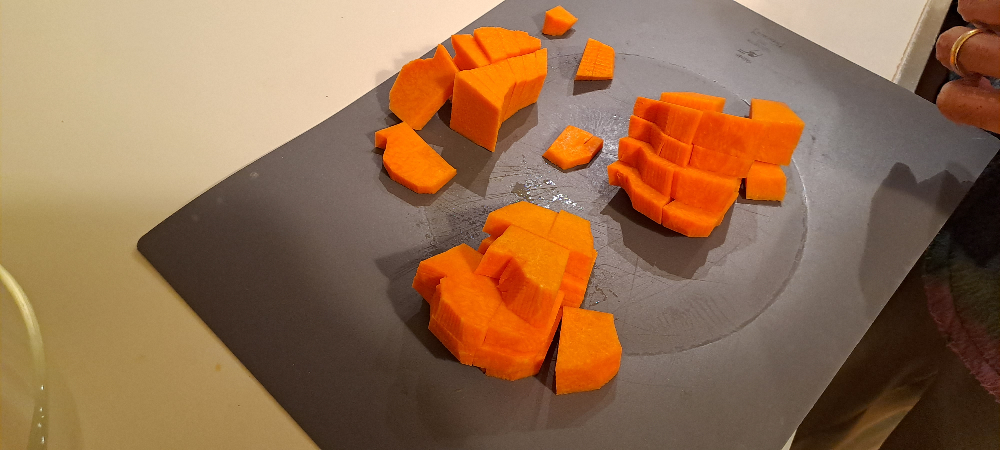
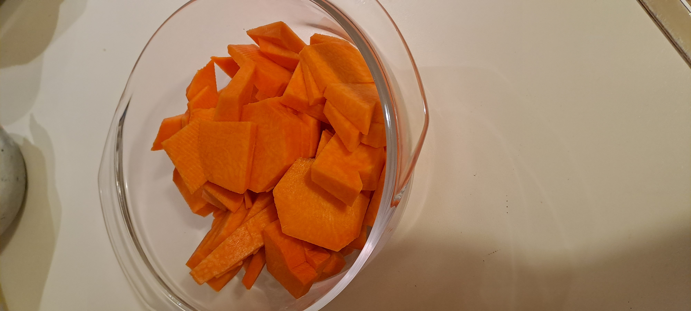
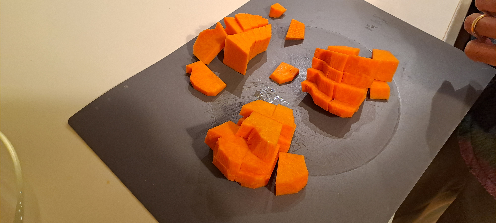
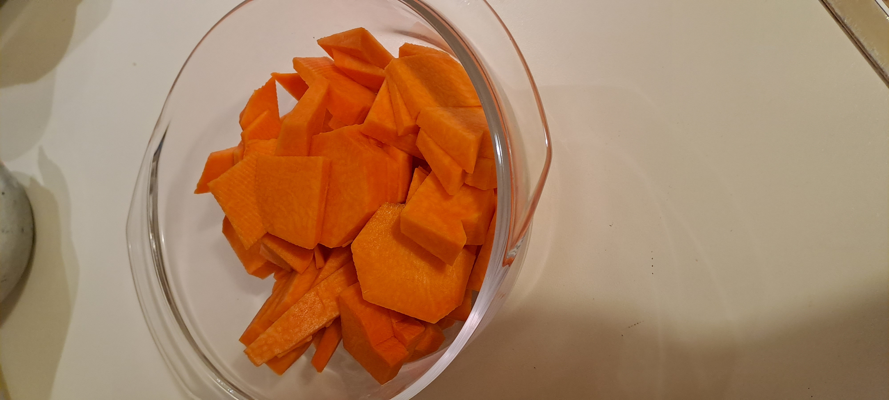
- Clean and slice the mushrooms, then sauté them in a pan over low heat with olive oil, thyme, and a pinch of salt for 20 minutes.
 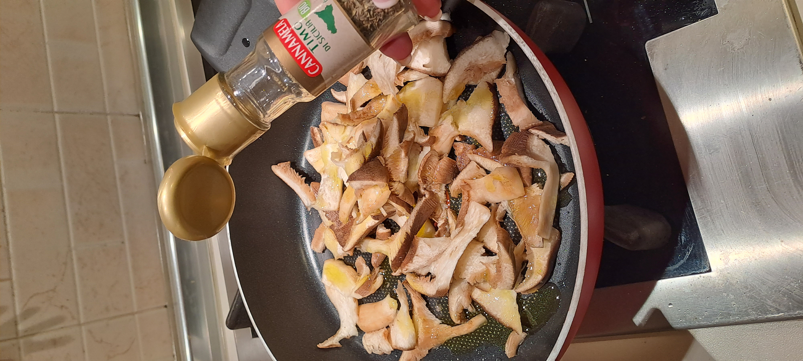
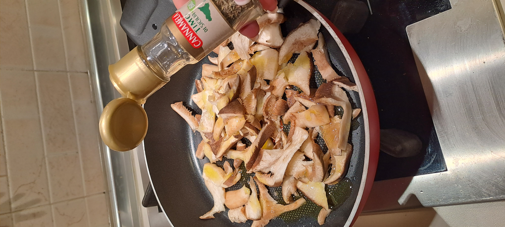

- Drain the cooked pumpkin thoroughly.
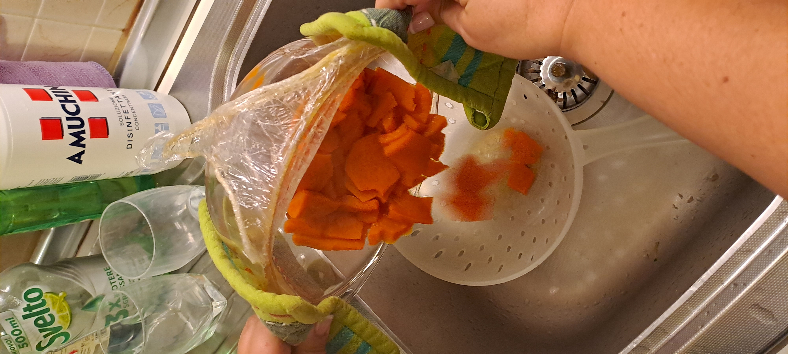
- Using an immersion blender, blend the pumpkin with Parmesan cheese, egg, milk, salt, and pepper until smooth.


 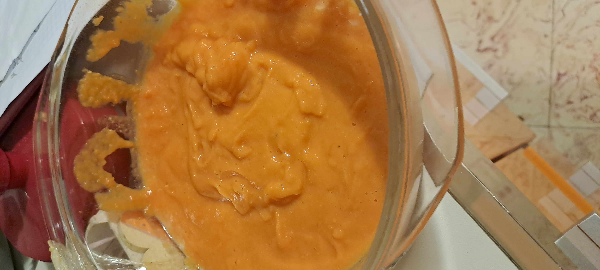
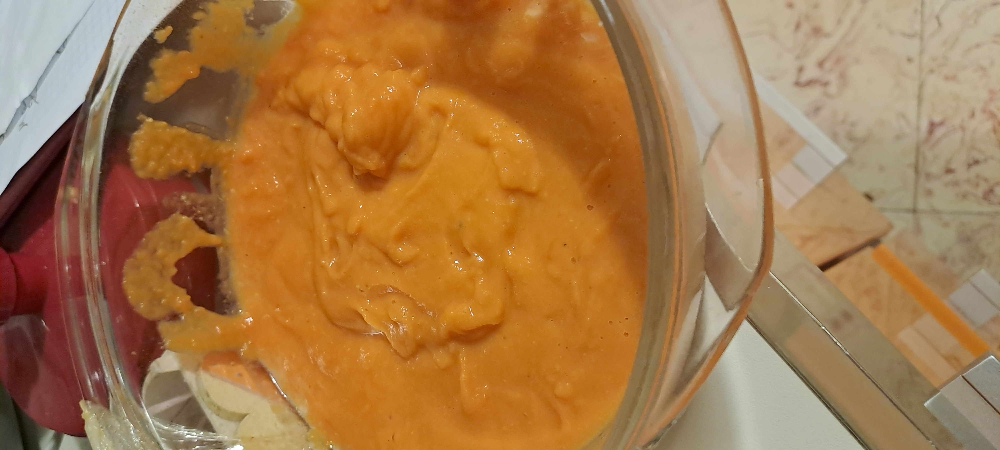
- Combine the sautéed mushrooms (including their juices) with the pumpkin mixture and stir until well mixed.
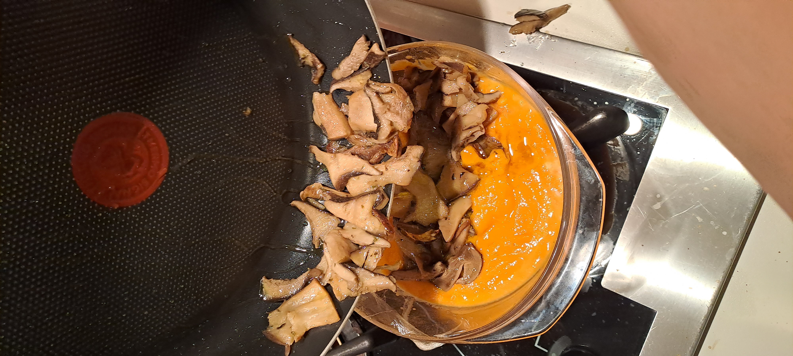
 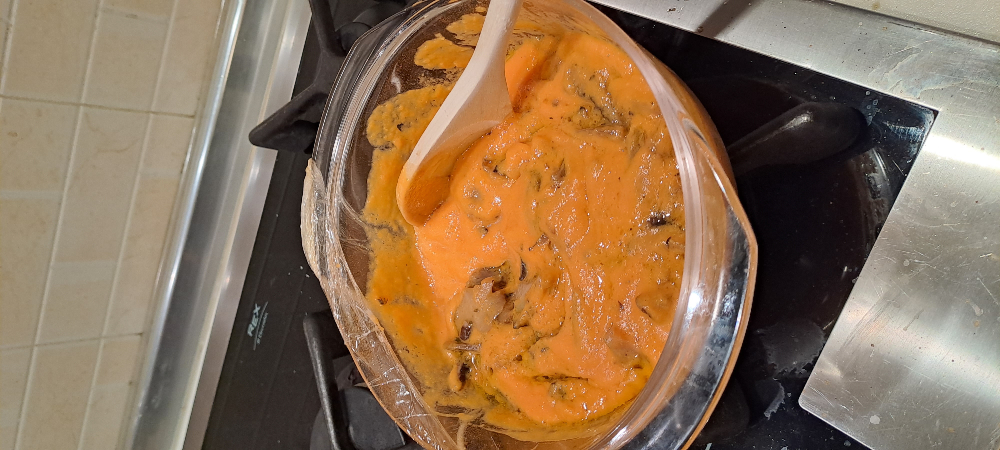
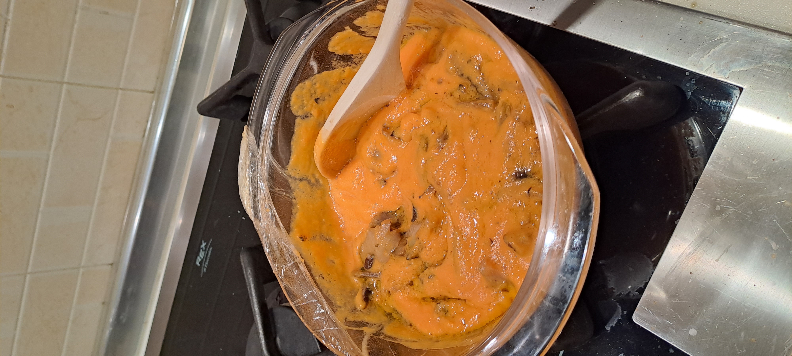
- Roll out the puff pastry and place it in a baking pan, shaping it to fit.
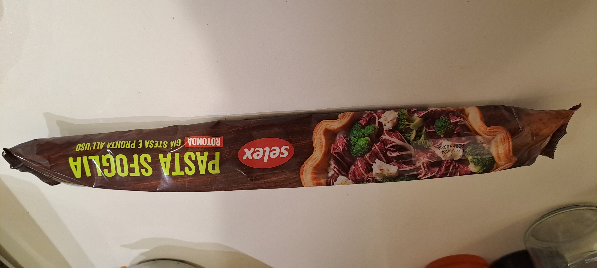


- Pour the pumpkin and mushroom filling into the pastry shell.


 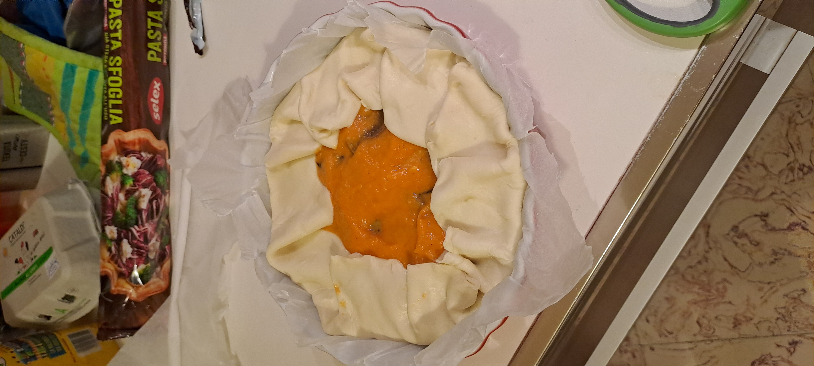
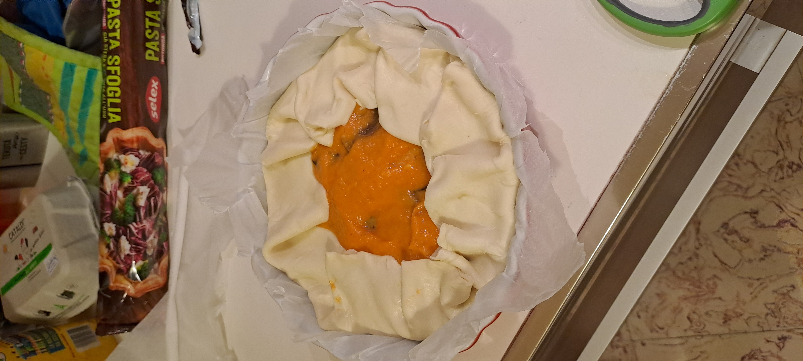
- Bake in a preheated static oven at 180°C for 30 minutes, or until the quiche is set and golden.
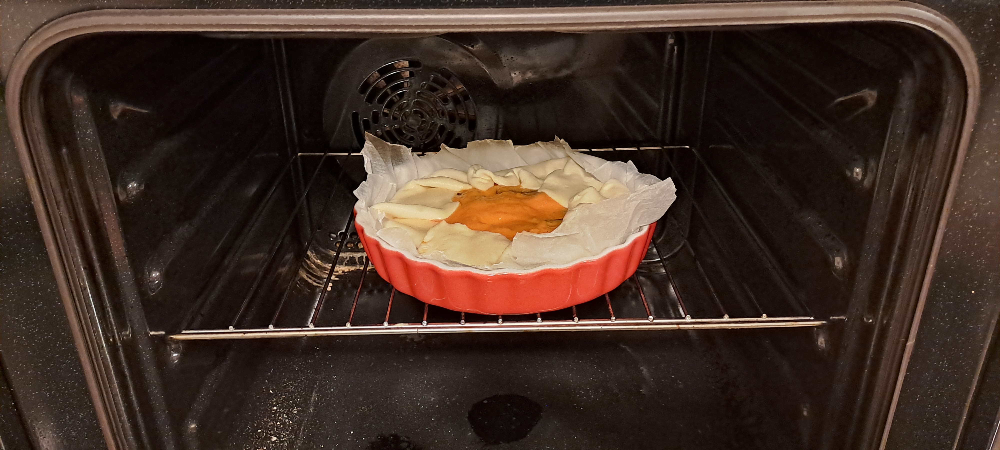